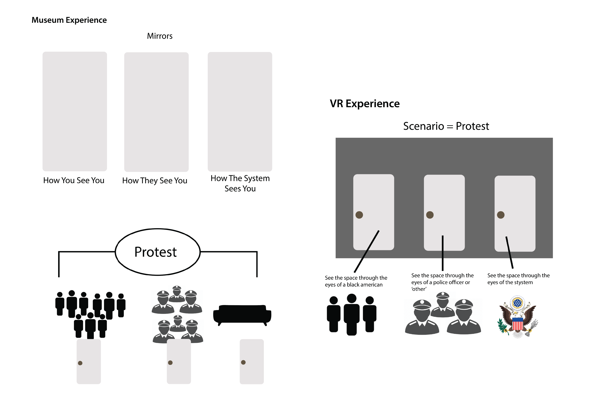
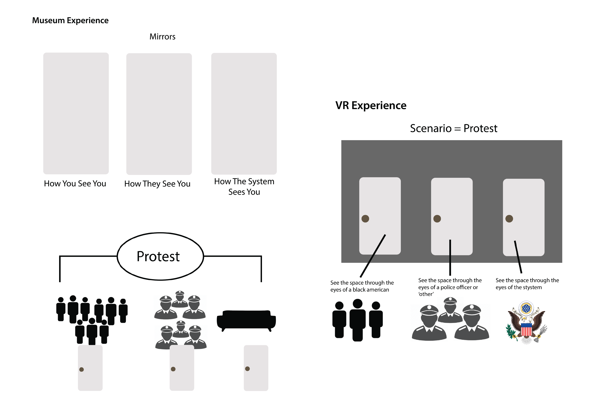

Role
: Web Design, User Interface Design, Wireframing,
Tools Used: Adobe Illustrator,
Craigslist
I create a website redesign and branding for Craigslist.
Research
Craigslist is a well known website that it still being used quite frequently. As a designer, it pains me to go on that website. The information heirarchy is unclear. There is no logo. Basic navigation throughout the site is both confusing and not intuitive.
So, me and two other classmates decided to redesign craigslist and make it a better, clearer, and more intuitive experience for all users.
After some interviews we realized that most people associated Craigslist with beeing "sketchy". Most people said it as if it were a negative element while other simply see that as being part of the brand.
Ideation
We knew immediately that we had to create a logo. An image that brands this company in a marketable way and makes them recognizabele.
 

People also confirmed that the content on the website is overwhelming.

Paper Protoype:Low Fidelity
Before


User Testing
Before
Flow Diagram
Before
Brand Developement
Before
Protoype: High Fidelity
Before